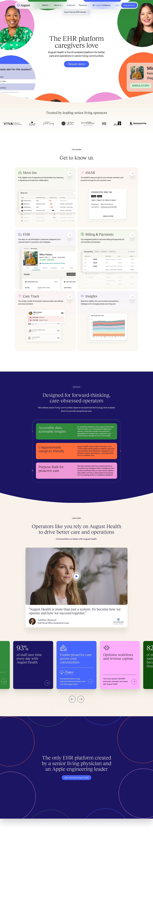

August Health EHR 的 Design.md 主题展示，围绕医疗健康、浅色界面、AI、数据仪表盘组织页面。
Explore August Health EHR's light Other design system: Midnight Ink #080331, Regal Violet #1b1463 colors, Saans, Reckless Neue typography, and DESIGN.md for...

#080331: #080331#1b1463: #1b1463#000000: #000000#ffffff: #ffffff#cccccc: #cccccc#f8f3eb: #f8f3eb#328a3b: #328a3b#4865ff: #4865ff#0d5238: #0d5238#ff6d39: #ff6d39#f098d7: #f098d7#114e0b: #114e0bfontFamily: [object Object]fontSize: [object Object]lineHeight: [object Object]letterSpacing: [object Object]control: 8pxcard: 16pxpreview: 16pxcontrolInset: 16pxmobileGutter: 20pxouterGutter: 32pxsection: 64px